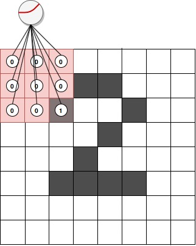
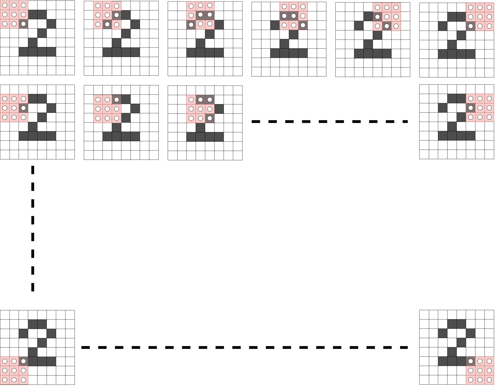
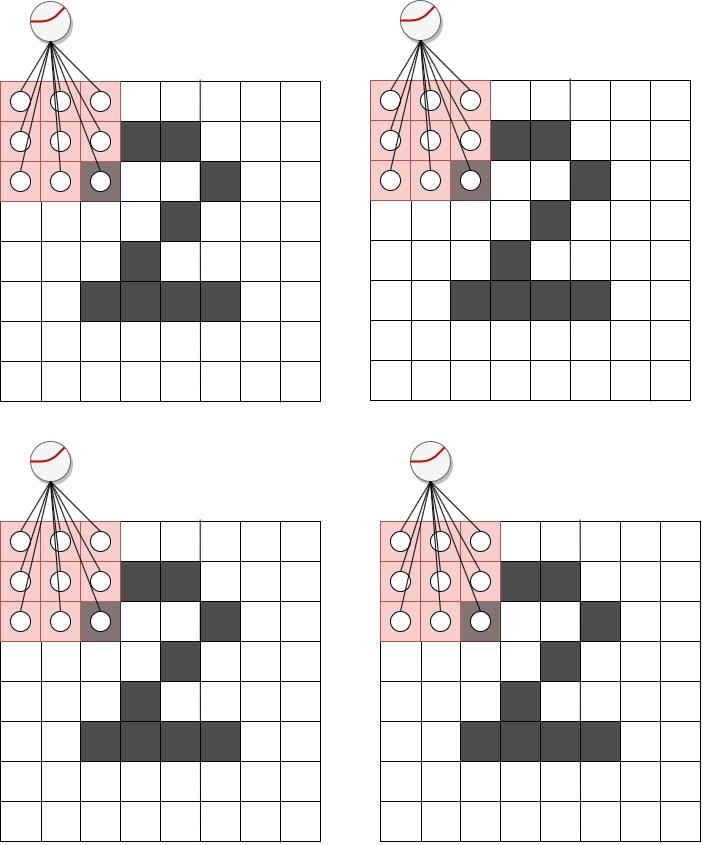
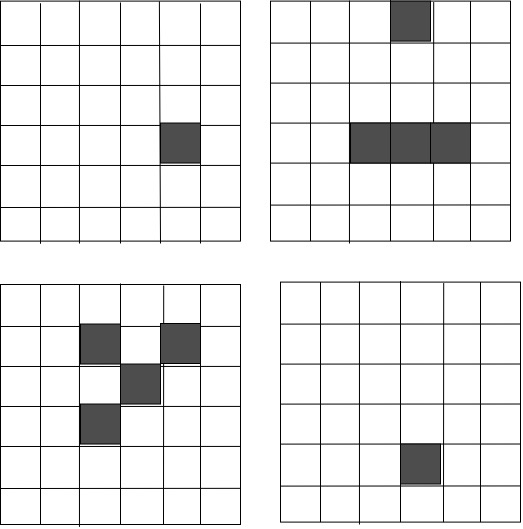
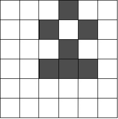

7. Konvolüsyonel Katmanlar, CNNs
Kayıt Tarihi:
Overfitting ile mücadele etmenin temel yolu sinir ağının parametre sayısını (kapasitesi denir) azaltmaktır, bunun en mantıklı yollarından birisi benzer girdiler için aynı weight değerlerini tekrar kullanmaktır. Konvolüsyonel sinir ağlarının temel fikri budur, bu derste bu konuyu tartışacağız.
Anahtar Kelimeler: CNN · convolutional layer · convolutional neural network · convolution kernel · konvolüsyon · konvolüsyonel katman · max pooling · mean pooling · sum poolingSinir ağlarında en temel sorun overfitting ile mücadeledir; yani sinir ağının input verilerindeki sadece temel sinyalleri öğrenmesi yerine gereksiz detayları (noise) fazlaca öğrenmesi ve bunları ezberlemesini engellemek. Daha önce sinir ağını küçültmek ve dropout eklemek yoluyla overfitting ile bir miktar başa mücadele ettik fakat tek ve en iyi yol bu değildir aslında.
Overfitting olgusu sinir ağında veri setini öğrenmek için grekli olandan daha fazla parametre var olmasından dolayı oluşur, böyle durumda sinir ağı input verilerindeki her şeyi detaylıca ezberler. Bunun yerine sadece önemli sinyalleri öğrenmesini sağlamaya çalışırız; mesela kedi resimlerindeki önemli sinyaller bacaklar, kulaklar, kuyruk gibi kediyi diğer resimlerden ayırabilecek nesnelerdir.
Bundan dolayı overfitting olayı ile mücadele etmek için resimleri piksel piksel tek tek ele almak yerine piksel gruplarından oluşan parçaları ele alıp üzerinde çalışmak denenbilir. Bu sayede toplam parametre azaltılmış olur ve parametre/data oranı düşer. Yani pikseller yerine özel yapılara (structure) odaklanabiliriz, bunlar üzerine bir sinir ağı oluşturulabilir. Anlamlı yapılar bulduğumuzda resim içinde bu yapılar tekrarlanıyorsa (mesle kedi kulakları her resimde benzer yapıdadır) hepsi için farklı weight değerleri yerine aynı weight değerlerini kullanabiliriz ve parametre sayısı dramatik olarak azalabilir. Eğer hangi weight değerlerini tekrar kullanacağımızı belirleyebilirsek çok daha az parametre ile piksel piksel öğrenen sinir ağları kadar iyi öğrenen bir sinir ağı geliştirebiliriz.
Böyle anlamlı yapılar farklı şekillerde elde edilebilir; en yaygın ve meşhurlarından birisi konvolüsyon (convolution) işlemidir, bu işlemin yapıldığı katmanlara konvolüsyonel katmanlar (convolutional layer) denir.
Konvolüsyonel katman fikri şudur; tüm datasetin her bir inputunu her bir outputa bağlayan büyük bir katman kullanmak yerine veriyi çok sayıda küçük gruplara (genelde 25 veya daha az sayıda inputtan oluşan) bölerek her bir grup veriyi tek bir output ile bağlayan küçük katmanlar kullanırız. Mesela aşağıdaki görselde MNIST veri setinden 2 rakamına ait bir input resim temsili olarak gösteriliyor, bu input verisi $8\times8$ boyutunda. 
Bu verinin tamamını büyük bir katmanda kullanmak yerine $3\times3$ boyutunda (buna çekirdeğin boyutu denir) bir kısmını şekilde görüldüğü gibi bir katmana input olarak veriyoruz ve bunun tahminini üretiyoruz, tahmin üretimi daha önce öğrendiğimiz (forward propagation) ile aynıdır. Burada kullandığımız bu küçük katmana konvolüsyon çekirdeği (kernel) denir, çekirdek dediğimiz şey aslında çok küçük olan klasik bir katmandır.
Daha sonra bu büyük inputun tamamını taramak için bu çekirdeği piksel piksel yatay ve dikey yönde hareket ettirip her bir posizyon için birer tahmin üretiriz. Burada $8\times8$ boyutunda bir veri ele aldığımız için sonuçta $6\times6=36$ tane tahmin üretmiş oluruz. Aşağıdaki görseli inceleyin. 
Bir konvolüsyonel katmanda sadece bir tane değil çok sayıda çekirdek vardır, yani yukarıda tarif ettiğim işlem bir kere değil çok kere tekrarlanır. Her biri için $6\times6$ boyutunda (buradaki örnek için) bir tahmin matrisi oluşturulur. Örneğin aşağıda 4 çekirdekli bir konvolüsyonel katmanın çekirdekleri gösteriliyor; her bir çekirdek resmin tamamını tarayacak ve birer tane $6\times6$ matrisi çıktı olarak dönüdrecek. 
Bunlardan her biri aşağıdaki gibi çıktılar üretsin varsayalım, burada bir kaç şeye dikkat çekeceğim. Şekillerden de anlaşılacağı gibi sağ üstteki çekirdek input resmini tararken yatay bir çizgi içeren bir kısma denk geldiğinde forward propagatin ile tahmin yaparken çok yüksek tahmin (1'e yakın) üretecektir. Benzer şekilde sol alttaki çekirdek resimde çapraz bir çizgi gördüğünde yüksek tahmin değerleri üretecektir, sağ alttaki çekirdek ise training aşamasında pek bir şey öğrenememiştir. Yani anlatmak istediğim şey şudur; her bir çekirdek resimdeki farklı bör yapıya odaklanır. Mesela kedi resminde farklı çekirdekler kulakları, ayakları veya kuyrukları araştırır. 
Şimdi konvolüsyonel katmanımız bu dört tane matrisi kullanıp çıktı olarak tek bir tahmin matrisi oluşturacak, bunu yapmak için farklı seçenekler var. Bu dört matrisi terim terim toplayabiliriz (sum pooling), aynı pozisyondaki elemanların ortalamalarından bir matris üretebiliriz (mean pooling) veya her bir pozisyondaki elemanların maksimumlarından bir matris oluşturabiliriz (max pooling). Burada en yaygın kullanılanıdır, biz de öyle yapalım. Sonuçta konvolüsyonel katmanımız aşağıdaki final çıktıyı üretir, sadece bu çıktı forward propagation adımında sonraki katmana iletilecektir. 
Konvolüsyonel katman fikrinden şunu anlamamız gerekir; her bir çekirdek farklı bir yapıyı arar, bundan dolayı mesela kedinin iki kulağı için iki farklı weight parametresi yerine tek weight parametresi kullanmış oluruz. Benzer şekilde dört bacak için dörtte bir oranda daha az weight parametresi ile çalışmış oluruz. Konvolüsyon mantığı budur, benzer input verileri için aynı weight setini kullanmak. Bu da toplam parametre sayısını önemli ölçüde azaltarak overfitting olasılığını azaltır.
Şimdi bir konvolüsyonel katmanın sinir ağına nasıl ekleneceğine değinelim. Önce aşağıdaki gibi bir fonksiyonla bir input resim gurubu (batch) içindeki resimlerin çekirdek boyutunda alt bölgelerini seçmek isteriz.
def get_image_section(layer, row_from, row_to, col_from, col_to):
section = layer[:, row_from:row_to, col_from:col_to]
return section.reshape(-1, 1, row_to-row_from, col_to-col_from)
Batch içindeki tüm resimlerin tüm alt bölgelerini kesmek için aşağıdaki gibi bir döngü kullanabiliriz.
layer_0 = images[batch_start:batch_end]
layer_0 = layer_0.reshape(layer_0.shape[0],28,28)
sects = list()
for row_start in range(layer_0.shape[1]-kernel_rows):
for col_start in range(layer_0.shape[2]-kernel_cols):
sect = get_image_section(layer_0, row_start, row_start+kernel_rows, col_start, col_start+kernel_cols)
sects.append(sect)
expanded_input = np.concatenate(sects, axis=1)
es = expanded_input.shape
flattened_input = expanded_input.reshape(es[0]*es[1], -1)
Burada layer_0 katmanı $28\times28$ boyutunda resimlerin bir batchidir, her bir resmin çekirdek boyutundaki ksıımları taranıp kesiliyor ve sects adında bir listede toplanıyor. Daha sonra bu liste içindeki veriler birleştirilip düzleştirilecek şekilde yeniden boyutlandırılıyor. Her bir kesilen bölgeyi farklı bir resim gibi düşünebilirsiniz,; yani mesela 8 resimden oluşan bir batch ve her resimde 100 alt bölge kesiliyorsa bu durumu 800 küçük resimden oluşan bir batch varmış gibi düşünebilirsiniz. Bu küçük resimleri tek outputlu lineer bir katman (konvolüsyonel olmayan) ile forward propagation işlemine sokmak demek aslında her bir alt bölgenin lineer katmanla tahmin edilmesi demektir. Her bir alt bölgeyi tek outputlu farklı bir lineer katman ile çalışmak ile bu bölgelerin hepsini $n$ outputlu tek bir lineer katmana göndermek aynı şeydir. Bu işlem daha efektif olduğundan böyle yapacağız.
Aşağıdaki programda daha önce ele aldığımız MNIST problemindeki ilk lineer katmanı bir konvolüsyonel katmanla değiştiriyoruz. Sonuç olarak test doğruluğu az miktar artarak %88.16 maksimum değerine ulaşıyor. Çoğu durumda birden fazla konvolüsyonel katmanlar arka arkaya uygulanır, bunu denerseniz test doğruluğunun daha da artacağını görürsünüz.
Aşağıdaki sinir ağının öğrenmeyi tamamlaması biraz zaman alacaktır, sabırlı olmakta fayda var.
import sys
import numpy as np
import tensorflow as tf
np.random.seed(1)
(x_train, y_train), (x_test, y_test) = tf.keras.datasets.mnist.load_data()
images, labels = (x_train[0:1000].reshape(1000, 28*28)/255, y_train[0:1000])
one_hot_labels = np.zeros((len(labels), 10))
for i,l in enumerate(labels):
one_hot_labels[i][l] = 1
labels = one_hot_labels
test_images = x_test.reshape(len(x_test), 28*28)/255
test_labels = np.zeros((len(y_test), 10))
for i,l in enumerate(y_test):
test_labels[i][l] = 1
def tanh(x):
return np.tanh(x)
def tanh2deriv(output):
return 1 - (output**2)
def softmax(x):
temp = np.exp(x)
return temp / np.sum(temp, axis=1, keepdims=True)
alpha, iterations = 2, 300
pixels_per_image, num_labels = 784, 10
batch_size = 128
input_rows = 28
input_cols = 28
kernel_rows = 3
kernel_cols = 3
num_kernels = 16
hidden_size = ((input_rows - kernel_rows)*(input_cols - kernel_cols))*num_kernels
kernels = 0.02*np.random.random((kernel_rows*kernel_cols, num_kernels)) - 0.01
weights_1_2 = 0.2*np.random.random((hidden_size, num_labels)) - 0.1
def get_image_section(layer,row_from, row_to, col_from, col_to):
section = layer[:,row_from:row_to,col_from:col_to]
return section.reshape(-1,1,row_to-row_from, col_to-col_from)
for j in range(iterations):
correct_cnt = 0
for i in range(int(len(images)/batch_size)):
batch_start, batch_end=((i*batch_size), ((i+1)*batch_size))
layer_0 = images[batch_start:batch_end]
layer_0 = layer_0.reshape(layer_0.shape[0], 28, 28)
layer_0.shape
sects = list()
for row_start in range(layer_0.shape[1] - kernel_rows):
for col_start in range(layer_0.shape[2] - kernel_cols):
sect = get_image_section(layer_0,
row_start,
row_start+kernel_rows,
col_start,
col_start+kernel_cols)
sects.append(sect)
expanded_input = np.concatenate(sects, axis=1)
es = expanded_input.shape
flattened_input = expanded_input.reshape(es[0]*es[1], -1)
kernel_output = flattened_input.dot(kernels)
layer_1 = tanh(kernel_output.reshape(es[0], -1))
dropout_mask = np.random.randint(2, size=layer_1.shape)
layer_1 *= dropout_mask*2
layer_2 = softmax(np.dot(layer_1, weights_1_2))
for k in range(batch_size):
labelset = labels[batch_start+k:batch_start+k+1]
_inc = int(np.argmax(layer_2[k:k+1]) == np.argmax(labelset))
correct_cnt += _inc
layer_2_delta = (labels[batch_start:batch_end]-layer_2)/(batch_size * layer_2.shape[0])
layer_1_delta = layer_2_delta.dot(weights_1_2.T)*tanh2deriv(layer_1)
layer_1_delta *= dropout_mask
weights_1_2 += alpha*layer_1.T.dot(layer_2_delta)
l1d_reshape = layer_1_delta.reshape(kernel_output.shape)
k_update = flattened_input.T.dot(l1d_reshape)
kernels -= alpha*k_update
test_correct_cnt = 0
for i in range(len(test_images)):
layer_0 = test_images[i:i+1]
layer_0 = layer_0.reshape(layer_0.shape[0], 28, 28)
layer_0.shape
sects = list()
for row_start in range(layer_0.shape[1] - kernel_rows):
for col_start in range(layer_0.shape[2] - kernel_cols):
sect = get_image_section(layer_0,
row_start,
row_start+kernel_rows,
col_start,
col_start+kernel_cols)
sects.append(sect)
expanded_input = np.concatenate(sects, axis=1)
es = expanded_input.shape
flattened_input = expanded_input.reshape(es[0]*es[1], -1)
kernel_output = flattened_input.dot(kernels)
layer_1 = tanh(kernel_output.reshape(es[0], -1))
layer_2 = np.dot(layer_1, weights_1_2)
test_correct_cnt += int(np.argmax(layer_2) == np.argmax(test_labels[i:i+1]))
if(j % 1 == 0):
sys.stdout.write("\n"+ \
"I:" + str(j) + \
" Test-Acc:"+str(test_correct_cnt/float(len(test_images)))+\
" Train-Acc:" + str(correct_cnt/float(len(images))))
>>>
I:0 Test-Acc:0.0288 Train-Acc:0.055
I:1 Test-Acc:0.0273 Train-Acc:0.037
I:2 Test-Acc:0.028 Train-Acc:0.037
I:3 Test-Acc:0.0292 Train-Acc:0.04
I:4 Test-Acc:0.0339 Train-Acc:0.046
I:5 Test-Acc:0.0478 Train-Acc:0.068
I:6 Test-Acc:0.076 Train-Acc:0.083
I:7 Test-Acc:0.1316 Train-Acc:0.096
I:8 Test-Acc:0.2137 Train-Acc:0.127
I:9 Test-Acc:0.2941 Train-Acc:0.148
I:10 Test-Acc:0.3563 Train-Acc:0.181
I:11 Test-Acc:0.4023 Train-Acc:0.209
I:12 Test-Acc:0.4358 Train-Acc:0.238
I:13 Test-Acc:0.4473 Train-Acc:0.286
I:14 Test-Acc:0.4389 Train-Acc:0.274
I:15 Test-Acc:0.3951 Train-Acc:0.257
I:16 Test-Acc:0.2222 Train-Acc:0.243
I:17 Test-Acc:0.0613 Train-Acc:0.112
I:18 Test-Acc:0.0266 Train-Acc:0.035
I:19 Test-Acc:0.0127 Train-Acc:0.026
I:20 Test-Acc:0.0133 Train-Acc:0.022
I:21 Test-Acc:0.0185 Train-Acc:0.038
I:22 Test-Acc:0.0363 Train-Acc:0.038
I:23 Test-Acc:0.0928 Train-Acc:0.067
I:24 Test-Acc:0.1994 Train-Acc:0.081
I:25 Test-Acc:0.3086 Train-Acc:0.154
I:26 Test-Acc:0.4276 Train-Acc:0.204
I:27 Test-Acc:0.5323 Train-Acc:0.256
I:28 Test-Acc:0.5919 Train-Acc:0.305
I:29 Test-Acc:0.6324 Train-Acc:0.341
I:30 Test-Acc:0.6608 Train-Acc:0.426
I:31 Test-Acc:0.6815 Train-Acc:0.439
I:32 Test-Acc:0.7048 Train-Acc:0.462
I:33 Test-Acc:0.7171 Train-Acc:0.484
I:34 Test-Acc:0.7313 Train-Acc:0.505
I:35 Test-Acc:0.7355 Train-Acc:0.53
I:36 Test-Acc:0.7417 Train-Acc:0.548
I:37 Test-Acc:0.747 Train-Acc:0.534
I:38 Test-Acc:0.7491 Train-Acc:0.55
I:39 Test-Acc:0.7459 Train-Acc:0.562
I:40 Test-Acc:0.7352 Train-Acc:0.54
I:41 Test-Acc:0.7082 Train-Acc:0.496
I:42 Test-Acc:0.6487 Train-Acc:0.456
I:43 Test-Acc:0.5209 Train-Acc:0.353
I:44 Test-Acc:0.3305 Train-Acc:0.234
I:45 Test-Acc:0.2052 Train-Acc:0.174
I:46 Test-Acc:0.2149 Train-Acc:0.136
I:47 Test-Acc:0.2679 Train-Acc:0.171
I:48 Test-Acc:0.3237 Train-Acc:0.172
I:49 Test-Acc:0.3581 Train-Acc:0.186
I:50 Test-Acc:0.4202 Train-Acc:0.21
I:51 Test-Acc:0.5165 Train-Acc:0.223
I:52 Test-Acc:0.6007 Train-Acc:0.262
I:53 Test-Acc:0.6476 Train-Acc:0.308
I:54 Test-Acc:0.676 Train-Acc:0.363
I:55 Test-Acc:0.696 Train-Acc:0.402
I:56 Test-Acc:0.7077 Train-Acc:0.434
I:57 Test-Acc:0.7204 Train-Acc:0.441
I:58 Test-Acc:0.7303 Train-Acc:0.475
I:59 Test-Acc:0.7359 Train-Acc:0.475
I:60 Test-Acc:0.7401 Train-Acc:0.525
I:61 Test-Acc:0.7493 Train-Acc:0.517
I:62 Test-Acc:0.7533 Train-Acc:0.517
I:63 Test-Acc:0.7606 Train-Acc:0.538
I:64 Test-Acc:0.7644 Train-Acc:0.554
I:65 Test-Acc:0.7724 Train-Acc:0.57
I:66 Test-Acc:0.7788 Train-Acc:0.586
I:67 Test-Acc:0.7855 Train-Acc:0.595
I:68 Test-Acc:0.7853 Train-Acc:0.591
I:69 Test-Acc:0.7925 Train-Acc:0.605
I:70 Test-Acc:0.7973 Train-Acc:0.64
I:71 Test-Acc:0.8013 Train-Acc:0.621
I:72 Test-Acc:0.8029 Train-Acc:0.626
I:73 Test-Acc:0.8092 Train-Acc:0.631
I:74 Test-Acc:0.8099 Train-Acc:0.638
I:75 Test-Acc:0.8156 Train-Acc:0.661
I:76 Test-Acc:0.8156 Train-Acc:0.639
I:77 Test-Acc:0.8184 Train-Acc:0.65
I:78 Test-Acc:0.8216 Train-Acc:0.67
I:79 Test-Acc:0.8246 Train-Acc:0.675
I:80 Test-Acc:0.8237 Train-Acc:0.666
I:81 Test-Acc:0.8273 Train-Acc:0.673
I:82 Test-Acc:0.8273 Train-Acc:0.704
I:83 Test-Acc:0.8314 Train-Acc:0.674
I:84 Test-Acc:0.8292 Train-Acc:0.686
I:85 Test-Acc:0.8335 Train-Acc:0.699
I:86 Test-Acc:0.8359 Train-Acc:0.694
I:87 Test-Acc:0.8375 Train-Acc:0.704
I:88 Test-Acc:0.8373 Train-Acc:0.697
I:89 Test-Acc:0.8398 Train-Acc:0.704
I:90 Test-Acc:0.8393 Train-Acc:0.687
I:91 Test-Acc:0.8436 Train-Acc:0.705
I:92 Test-Acc:0.8437 Train-Acc:0.711
I:93 Test-Acc:0.8446 Train-Acc:0.721
I:94 Test-Acc:0.845 Train-Acc:0.719
I:95 Test-Acc:0.8469 Train-Acc:0.724
I:96 Test-Acc:0.8476 Train-Acc:0.726
I:97 Test-Acc:0.848 Train-Acc:0.718
I:98 Test-Acc:0.8496 Train-Acc:0.719
I:99 Test-Acc:0.85 Train-Acc:0.73
I:100 Test-Acc:0.8511 Train-Acc:0.737
I:101 Test-Acc:0.8503 Train-Acc:0.73
I:102 Test-Acc:0.8504 Train-Acc:0.717
I:103 Test-Acc:0.8528 Train-Acc:0.74
I:104 Test-Acc:0.8532 Train-Acc:0.733
I:105 Test-Acc:0.8537 Train-Acc:0.73
I:106 Test-Acc:0.8568 Train-Acc:0.721
I:107 Test-Acc:0.857 Train-Acc:0.75
I:108 Test-Acc:0.8558 Train-Acc:0.731
I:109 Test-Acc:0.8578 Train-Acc:0.744
I:110 Test-Acc:0.8588 Train-Acc:0.754
I:111 Test-Acc:0.8579 Train-Acc:0.732
I:112 Test-Acc:0.8582 Train-Acc:0.747
I:113 Test-Acc:0.8593 Train-Acc:0.747
I:114 Test-Acc:0.8598 Train-Acc:0.751
I:115 Test-Acc:0.8603 Train-Acc:0.74
I:116 Test-Acc:0.86 Train-Acc:0.753
I:117 Test-Acc:0.8588 Train-Acc:0.746
I:118 Test-Acc:0.861 Train-Acc:0.741
I:119 Test-Acc:0.8616 Train-Acc:0.731
I:120 Test-Acc:0.8629 Train-Acc:0.753
I:121 Test-Acc:0.8609 Train-Acc:0.743
I:122 Test-Acc:0.8627 Train-Acc:0.752
I:123 Test-Acc:0.8646 Train-Acc:0.76
I:124 Test-Acc:0.8649 Train-Acc:0.766
I:125 Test-Acc:0.8659 Train-Acc:0.752
I:126 Test-Acc:0.868 Train-Acc:0.756
I:127 Test-Acc:0.8648 Train-Acc:0.767
I:128 Test-Acc:0.8662 Train-Acc:0.747
I:129 Test-Acc:0.8669 Train-Acc:0.753
I:130 Test-Acc:0.8694 Train-Acc:0.753
I:131 Test-Acc:0.8692 Train-Acc:0.76
I:132 Test-Acc:0.8658 Train-Acc:0.756
I:133 Test-Acc:0.8666 Train-Acc:0.769
I:134 Test-Acc:0.8692 Train-Acc:0.77
I:135 Test-Acc:0.8681 Train-Acc:0.757
I:136 Test-Acc:0.8705 Train-Acc:0.77
I:137 Test-Acc:0.8706 Train-Acc:0.77
I:138 Test-Acc:0.8684 Train-Acc:0.768
I:139 Test-Acc:0.8664 Train-Acc:0.774
I:140 Test-Acc:0.8666 Train-Acc:0.756
I:141 Test-Acc:0.8705 Train-Acc:0.783
I:142 Test-Acc:0.87 Train-Acc:0.775
I:143 Test-Acc:0.8729 Train-Acc:0.769
I:144 Test-Acc:0.8725 Train-Acc:0.776
I:145 Test-Acc:0.8721 Train-Acc:0.772
I:146 Test-Acc:0.8718 Train-Acc:0.765
I:147 Test-Acc:0.8746 Train-Acc:0.777
I:148 Test-Acc:0.8746 Train-Acc:0.77
I:149 Test-Acc:0.8734 Train-Acc:0.778
I:150 Test-Acc:0.873 Train-Acc:0.785
I:151 Test-Acc:0.8732 Train-Acc:0.76
I:152 Test-Acc:0.8727 Train-Acc:0.779
I:153 Test-Acc:0.8754 Train-Acc:0.772
I:154 Test-Acc:0.8729 Train-Acc:0.773
I:155 Test-Acc:0.8758 Train-Acc:0.784
I:156 Test-Acc:0.8732 Train-Acc:0.774
I:157 Test-Acc:0.8743 Train-Acc:0.782
I:158 Test-Acc:0.8762 Train-Acc:0.772
I:159 Test-Acc:0.8755 Train-Acc:0.79
I:160 Test-Acc:0.8751 Train-Acc:0.774
I:161 Test-Acc:0.8749 Train-Acc:0.782
I:162 Test-Acc:0.8744 Train-Acc:0.78
I:163 Test-Acc:0.8765 Train-Acc:0.782
I:164 Test-Acc:0.8738 Train-Acc:0.796
I:165 Test-Acc:0.8753 Train-Acc:0.798
I:166 Test-Acc:0.8767 Train-Acc:0.794
I:167 Test-Acc:0.8746 Train-Acc:0.784
I:168 Test-Acc:0.8769 Train-Acc:0.796
I:169 Test-Acc:0.8758 Train-Acc:0.789
I:170 Test-Acc:0.8764 Train-Acc:0.79
I:171 Test-Acc:0.873 Train-Acc:0.791
I:172 Test-Acc:0.8765 Train-Acc:0.797
I:173 Test-Acc:0.8772 Train-Acc:0.789
I:174 Test-Acc:0.8778 Train-Acc:0.781
I:175 Test-Acc:0.8758 Train-Acc:0.799
I:176 Test-Acc:0.8773 Train-Acc:0.785
I:177 Test-Acc:0.8766 Train-Acc:0.796
I:178 Test-Acc:0.8782 Train-Acc:0.803
I:179 Test-Acc:0.8789 Train-Acc:0.794
I:180 Test-Acc:0.8778 Train-Acc:0.794
I:181 Test-Acc:0.8778 Train-Acc:0.8
I:182 Test-Acc:0.8785 Train-Acc:0.791
I:183 Test-Acc:0.8777 Train-Acc:0.787
I:184 Test-Acc:0.8769 Train-Acc:0.781
I:185 Test-Acc:0.8765 Train-Acc:0.786
I:186 Test-Acc:0.8765 Train-Acc:0.793
I:187 Test-Acc:0.8785 Train-Acc:0.796
I:188 Test-Acc:0.879 Train-Acc:0.789
I:189 Test-Acc:0.8763 Train-Acc:0.79
I:190 Test-Acc:0.8774 Train-Acc:0.787
I:191 Test-Acc:0.8766 Train-Acc:0.782
I:192 Test-Acc:0.8803 Train-Acc:0.798
I:193 Test-Acc:0.8781 Train-Acc:0.789
I:194 Test-Acc:0.8795 Train-Acc:0.785
I:195 Test-Acc:0.8791 Train-Acc:0.807
I:196 Test-Acc:0.8778 Train-Acc:0.796
I:197 Test-Acc:0.8783 Train-Acc:0.801
I:198 Test-Acc:0.8778 Train-Acc:0.81
I:199 Test-Acc:0.8771 Train-Acc:0.784
I:200 Test-Acc:0.8776 Train-Acc:0.792
I:201 Test-Acc:0.8784 Train-Acc:0.794
I:202 Test-Acc:0.8787 Train-Acc:0.795
I:203 Test-Acc:0.8803 Train-Acc:0.781
I:204 Test-Acc:0.8798 Train-Acc:0.804
I:205 Test-Acc:0.8779 Train-Acc:0.779
I:206 Test-Acc:0.8788 Train-Acc:0.792
I:207 Test-Acc:0.8764 Train-Acc:0.793
I:208 Test-Acc:0.8792 Train-Acc:0.792
I:209 Test-Acc:0.8798 Train-Acc:0.803
I:210 Test-Acc:0.8788 Train-Acc:0.804
I:211 Test-Acc:0.8793 Train-Acc:0.797
I:212 Test-Acc:0.8764 Train-Acc:0.791
I:213 Test-Acc:0.8801 Train-Acc:0.801
I:214 Test-Acc:0.8814 Train-Acc:0.799
I:215 Test-Acc:0.8806 Train-Acc:0.79
I:216 Test-Acc:0.8799 Train-Acc:0.8
I:217 Test-Acc:0.8803 Train-Acc:0.802
I:218 Test-Acc:0.8782 Train-Acc:0.807
I:219 Test-Acc:0.8818 Train-Acc:0.797
I:220 Test-Acc:0.8793 Train-Acc:0.799
I:221 Test-Acc:0.8789 Train-Acc:0.815
I:222 Test-Acc:0.8791 Train-Acc:0.816
I:223 Test-Acc:0.8793 Train-Acc:0.809
I:224 Test-Acc:0.8814 Train-Acc:0.795
I:225 Test-Acc:0.8798 Train-Acc:0.799
I:226 Test-Acc:0.8805 Train-Acc:0.806
I:227 Test-Acc:0.88 Train-Acc:0.808
I:228 Test-Acc:0.8782 Train-Acc:0.801
I:229 Test-Acc:0.8802 Train-Acc:0.814
I:230 Test-Acc:0.8807 Train-Acc:0.8
I:231 Test-Acc:0.8809 Train-Acc:0.798
I:232 Test-Acc:0.8805 Train-Acc:0.82
I:233 Test-Acc:0.8795 Train-Acc:0.794
I:234 Test-Acc:0.8807 Train-Acc:0.806
I:235 Test-Acc:0.8806 Train-Acc:0.808
I:236 Test-Acc:0.8787 Train-Acc:0.802
I:237 Test-Acc:0.8796 Train-Acc:0.81
I:238 Test-Acc:0.8766 Train-Acc:0.805
I:239 Test-Acc:0.8781 Train-Acc:0.792
I:240 Test-Acc:0.8787 Train-Acc:0.809
I:241 Test-Acc:0.8762 Train-Acc:0.802
I:242 Test-Acc:0.8775 Train-Acc:0.811
I:243 Test-Acc:0.8804 Train-Acc:0.814
I:244 Test-Acc:0.8794 Train-Acc:0.804
I:245 Test-Acc:0.8788 Train-Acc:0.801
I:246 Test-Acc:0.8777 Train-Acc:0.795
I:247 Test-Acc:0.8785 Train-Acc:0.808
I:248 Test-Acc:0.8788 Train-Acc:0.803
I:249 Test-Acc:0.8773 Train-Acc:0.813
I:250 Test-Acc:0.8786 Train-Acc:0.808
I:251 Test-Acc:0.8787 Train-Acc:0.803
I:252 Test-Acc:0.8789 Train-Acc:0.812
I:253 Test-Acc:0.8792 Train-Acc:0.804
I:254 Test-Acc:0.8779 Train-Acc:0.815
I:255 Test-Acc:0.8796 Train-Acc:0.811
I:256 Test-Acc:0.8798 Train-Acc:0.806
I:257 Test-Acc:0.88 Train-Acc:0.803
I:258 Test-Acc:0.8776 Train-Acc:0.795
I:259 Test-Acc:0.8798 Train-Acc:0.803
I:260 Test-Acc:0.8799 Train-Acc:0.805
I:261 Test-Acc:0.8789 Train-Acc:0.807
I:262 Test-Acc:0.8784 Train-Acc:0.804
I:263 Test-Acc:0.8792 Train-Acc:0.806
I:264 Test-Acc:0.8777 Train-Acc:0.796
I:265 Test-Acc:0.8785 Train-Acc:0.821
I:266 Test-Acc:0.8794 Train-Acc:0.81
I:267 Test-Acc:0.8783 Train-Acc:0.816
I:268 Test-Acc:0.8777 Train-Acc:0.812
I:269 Test-Acc:0.8791 Train-Acc:0.812
I:270 Test-Acc:0.878 Train-Acc:0.813
I:271 Test-Acc:0.8784 Train-Acc:0.82
I:272 Test-Acc:0.8792 Train-Acc:0.821
I:273 Test-Acc:0.8781 Train-Acc:0.823
I:274 Test-Acc:0.8788 Train-Acc:0.816
I:275 Test-Acc:0.8793 Train-Acc:0.82
I:276 Test-Acc:0.8781 Train-Acc:0.829
I:277 Test-Acc:0.8795 Train-Acc:0.809
I:278 Test-Acc:0.875 Train-Acc:0.806
I:279 Test-Acc:0.8795 Train-Acc:0.813
I:280 Test-Acc:0.88 Train-Acc:0.816
I:281 Test-Acc:0.8796 Train-Acc:0.819
I:282 Test-Acc:0.8802 Train-Acc:0.809
I:283 Test-Acc:0.8804 Train-Acc:0.811
I:284 Test-Acc:0.8779 Train-Acc:0.808
I:285 Test-Acc:0.8816 Train-Acc:0.82
I:286 Test-Acc:0.8792 Train-Acc:0.822
I:287 Test-Acc:0.8791 Train-Acc:0.817
I:288 Test-Acc:0.8769 Train-Acc:0.814
I:289 Test-Acc:0.8785 Train-Acc:0.807
I:290 Test-Acc:0.8778 Train-Acc:0.817
I:291 Test-Acc:0.8794 Train-Acc:0.82
I:292 Test-Acc:0.8804 Train-Acc:0.824
I:293 Test-Acc:0.8779 Train-Acc:0.812
I:294 Test-Acc:0.8784 Train-Acc:0.816
I:295 Test-Acc:0.877 Train-Acc:0.817
I:296 Test-Acc:0.8767 Train-Acc:0.826
I:297 Test-Acc:0.8774 Train-Acc:0.816
I:298 Test-Acc:0.8774 Train-Acc:0.804
I:299 Test-Acc:0.8774 Train-Acc:0.814